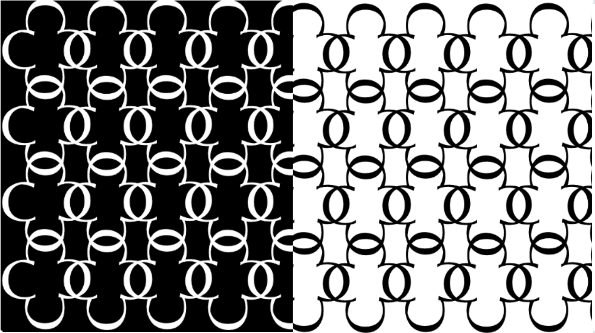
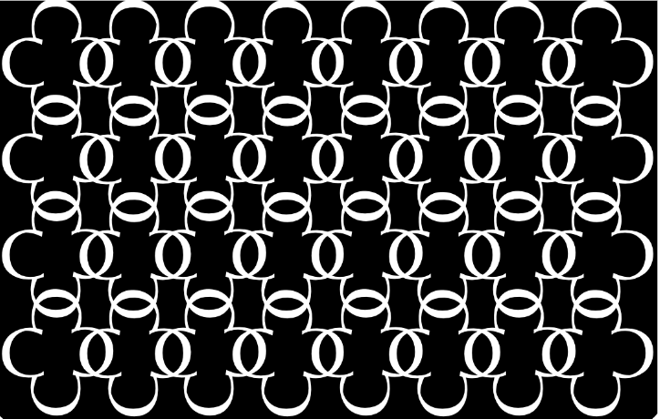
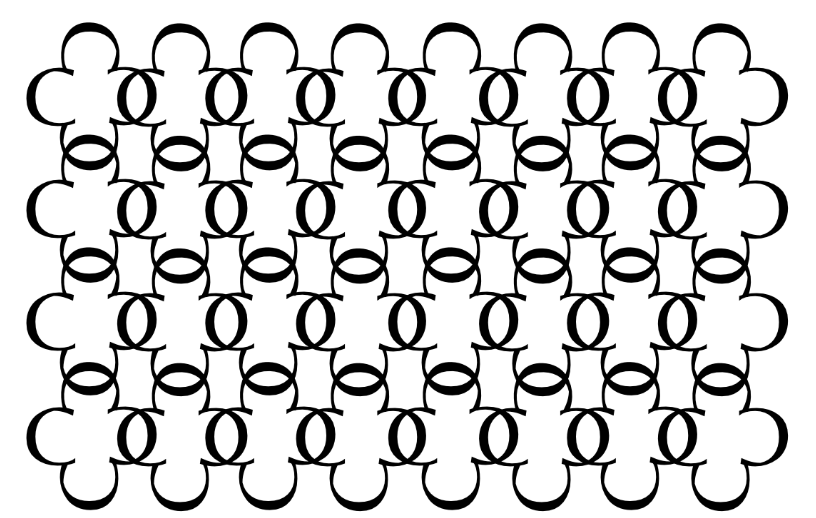

Boundless Illusions: Exploring Ambiguous Space in Graphic Patterns
Graphic Design, Letter Forms
This project showcases intricately designed patterns leveraging the concept of figure/ground or positive/negative space ambiguity. It pushes the boundaries of graphic design and typography, striving to create patterns that ingeniously blur the distinction between figure and ground, allowing elements to possess dual roles simultaneously. Within these patterns lies a deliberate incorporation of a letter, forming equally captivating positive and negative shapes. The intention is to challenge visual perception by crafting designs where the distinction between foreground and background is deliberately ambiguous, resulting in visually stimulating and conceptually engaging compositions.
 